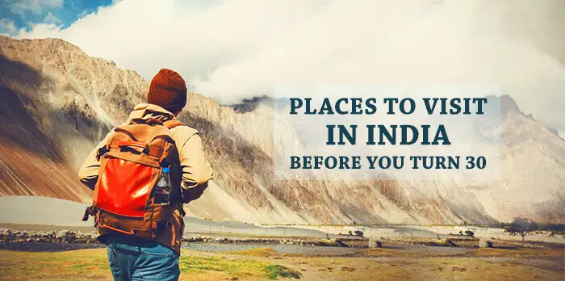
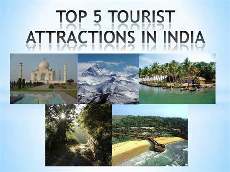

Lose yourself to find your own self. Live like there’s no tomorrow. And whatever you’ll explore today will last a lifetime with you. So, here’s a list of 101 amazing tourist places in India you must visit before you turn 30. These are not just destinations but fun places that will offer you some crazy experiences of a lifetime. What are you waiting for? It’s time to pack your bags and set on a journey to scratch off a few destinations from your bucket list. It’s time to visit these best tourist places in India to explore yourself on a journey.
 
Goa is one of the best holiday destinations in India that makes your trip memorable. If you are thinking about the best things to do in Goa, you can take a cruise from Mumbai to Goa to enjoy your trip in its best way.
Events: Sunburn Festival in December Water Sports At Baga and Calangute Beaches: Kneeboarding, Kayaking, Wakeboarding, Windsurfing, Scuba Diving, White Water Rafting Famous Markets: Anjuna Flea Market, Panjim Market, Mackie’s Night Bazaar, Saturday Market Best Resorts Near Baga Beach: Estrela Do Mar Beach Resort, Resort Rio
Chandigarh is a city, district and union territory in India that serves as the joint capital of the two neighbouring states of Punjab and Haryana. Chandigarh is bordered by the state of Punjab to the west and the south, and by the state of Haryana to the east. It constitutes the bulk of the Chandigarh Capital Region or Greater Chandigarh, which also includes the adjacent satellite cities of Panchkula and Mohali. It is located 260 km (162 miles) north of New Delhi and 229 km (143 miles) southeast of Amritsar. Chandigarh is one of the earliest planned cities in post-independence India and is internationally known for its architecture and urban design. The master plan of the city was prepared by Swiss-French architect Le Corbusier, which built upon earlier plans created by the Polish architect Maciej Nowicki and the American planner Albert Mayer. Most of the government buildings and housing in the city were designed by a team headed by Le Corbusier, Jane Drew and Maxwell Fry. Chandigarh's Capitol Complex—as part of a global ensemble of Corbusier's buildings—was declared a World Heritage Site by UNESCO at the 40th session of the World Heritage Conference in July 2016. Chandigarh has grown greatly since its initial construction, and has also driven the development of two satellite cities in its neighbouring states. The metropolitan area of Chandigarh, Mohali and Panchkula collectively forms a "tri-city", with a combined population of over 1,611,770.The city has one of the highest per capita incomes in the country. The union territory has one of the highest Human Development Index among Indian states and territories.In 2015, a survey by LG Electronics ranked it as the happiest city in India on the happiness index. In 2015, an article published by BBC named Chandigarh one of the few master-planned cities in the world to have succeeded in terms of combining monumental architecture, cultural growth, and modernisation.
Planned by Vidyadhar Bhattacharya, Jaipur holds the distinction of being the first planned city of India. Renowned globally for its coloured gems, the capital city of Rajasthan combines the allure of its ancient history with all the advantages of a metropolis. The bustling modern city is one of the three corners of the golden triangle that includes Delhi, Agra and Jaipur. The story goes that in 1876, the Prince of Wales visited India on a tour. Since the colour pink was symbolic of hospitality, Maharaja Ram Singh of Jaipur painted the entire city pink. The pink that colours the city makes for a marvellous spectacle to behold. Jaipur rises up majestically against the backdrop of the forts Nahargarh, Jaigarh and Garh Ganesh Temple. Jaipur traces back its origins to 1727 when it was established by Jai Singh II, the Raja of Amber. He shifted his capital from Amber to the new city because of the rapidly-growing population and an increasing water scarcity. Noted architect Vidyadhar Bhattacharya used the established principles of Vastu Shastra to build the city.
Ganga Arti is not the entire itinerary of Varanasi. It is one of the oldest inhabited areas in the world, which is still populated. Varanasi holds numerous alleys, filled with temples. The either side of River Ganges is filled with 88 different ghats, each famous for different elements. Varanasi is also the gateway to reach Sarnath, the pinnacle of Buddhism pilgrimage in India. Top Attractions in Varanasi Assi Ghat, Dashashwamedh Ghat, Manikarnika Ghat, Kashi Vishwanath Temple, Tulsi Manas Temple, Durga Temple, Ramnagar Fort & Museum, Chunar Fort, Sarnath, Bharat Kala Bhavan Museum, Man Mandir Observatory. Things to do in Varanasi Take a early morning boat ride and holy in River Ganges. Watching Sunset at the ghats of Varansi. Witness the Ganga Aarti Ceremony in the evening. Sightseeing tour to Sarnath. Shopping at local market of Varanasi. Try the local street food of Varanasi. Celebrate Diwali at the ghats. Best time to visit Varanasi Winters is the best time to explore the beauty of Varanasi. From November to March the weather of Varanasi is pleasant during day time so that you can easily explore the city.

Top Attractions in Rishikesh Laxman Jhula, Neelkanth Mahadev Temple, Beatles Ashram, Neer Garh Waterfall, Swarg Ashram, Rishi Kund, Geeta Bhawan, Vashishta Gufa, Trayambakeshwar Temple, Kunjapuri Temple, Rajaji National Park. Things to do in Rishikesh River Rafting is the must to do things in Rishikesh. Camping & Bonfire at beside of River Ganges. Ayurveda Body Massages & Spa. Go on trekking. Witness the Ganga aarti at Triveni Ghats. Try some adventure sports like Bungee Jumping, Paragliding, Mountain Biking and more.
Best time to visit Rishikesh You can visit Rishikesh throughout the year. May and June is little bit hot and humid in Rishikesh. But most of the tourist visit Rishikesh during summer because it is best time for river rafting, camping and other adventure sports. During monsoon, the city celebrates the festival of Savan. Winters are the best time to visit Rishikesh to explore the natural beauty and enjoy adventure activities especially rock climbing.